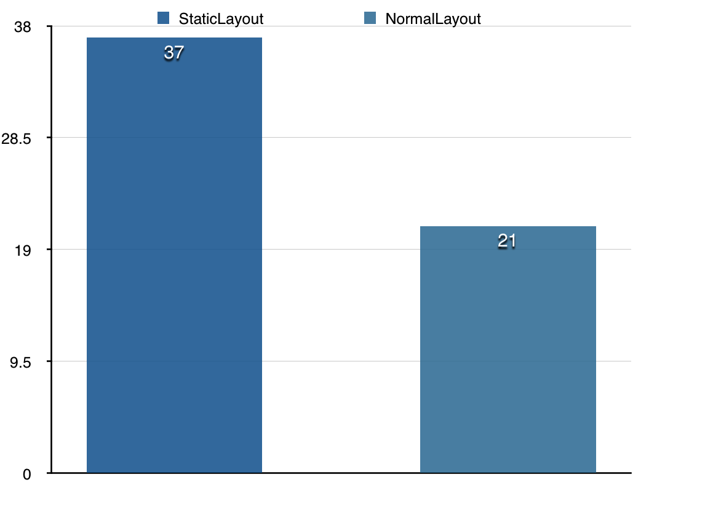

Android中的TextView是整个framework中最复杂的控件之一，负责Android中显示文本的大部分工作，framwork中的许多控件也直接或者间接的继承于TextView，例如Button，EditText等。其内部实现也相当复杂，单论代码行数来说，android-22中TextView有足足9509行，另外，TextView中许多操作都非常繁重，例如setText操作，需要设置SpanWatcher，或者需要重现创建一个SpannableString，还需要根据情况重新创建Text Layout，这些操作加起来之后令一次setText操作非常耗时。为了提升TextView的渲染效率，最近研究了一下预渲染的方法，接下来给大家讲解一下原理。
TextView渲染基本原理
首先来介绍下TextView的基本渲染原理，总的来说，TextView中负责渲染文字的主要是这三个类：
-
BoringLayout
主要负责显示单行文本，并提供了isBoring方法来判断是否满足单行文本的条件。 -
DynamicLayout
当文本为Spannable的时候，TextView就会使用它来负责文本的显示，在内部设置了SpanWatcher，当检测到span改变的时候，会进行reflow，重新计算布局。 -
StaticLayout
当文本为非单行文本，且非Spannable的时候，就会使用StaticLayout，内部并不会监听span的变化，因此效率上会比DynamicLayout高，只需一次布局的创建即可，但其实内部也能显示SpannableString，只是不能在span变化之后重新进行布局而已。
另外，以上三个类都继承于Layout类，在此类中统一负责文本的具体绘制，在Layout.draw方法中，会对文本一行一行的进行渲染：
TextLine tl = TextLine.obtain();
// Draw the lines, one at a time.
// The baseline is the top of the following line minus the current line's descent.
for (int i = firstLine; i <= lastLine; i++) {
....
Directions directions = getLineDirections(i);
if (directions == DIRS_ALL_LEFT_TO_RIGHT && !mSpannedText && !hasTabOrEmoji) {
// XXX: assumes there's nothing additional to be done
canvas.drawText(buf, start, end, x, lbaseline, paint);
} else {
tl.set(paint, buf, start, end, dir, directions, hasTabOrEmoji, tabStops);
tl.draw(canvas, x, ltop, lbaseline, lbottom);
}
}
TextLine.recycle(tl);
可以看出来对于Spannble，或者包含emoji的文本的话，实际渲染操作是交给了TextLine去绘制，否则直接使用canvas.drawText，TextLine负责单行复杂文本的绘制，其中Spannable, Emoji之类的绘制逻辑都包含在里面，TextLine的绘制逻辑也并非十分高效，这里后续将会继续说明其应该如何优化。
TextLayoutCache
Canvas在drawText的时候，如果需要每次都计算字体的大小，边距等之类的话，就会非常耗时，导致drawText时间会拉的很长，为了提高效率，android在4.0之后引入了TextLayoutCache，使用LRU Cache缓存了字形，边距等数据，提升了drawText的速度，在4.4中，这个cache的大小是0.5M，全局使用，并且会在Activity的configurationChanged, onResume, lowMemory, updateVisibility等时机，会调用Canvas.freeTextLayoutCache来释放这部分内存。由于这部分的cache是系统底层控制的，我们无法做具体的控制。
TextView的预渲染优化
从TextView的渲染原理来看，如果只是单纯的显示文本，我们根本不需要另外设置SpanWatcher来监听span的变化，因此我们可以直接使用BoringLayout或者StaticLayout来直接显示文本内容，但是BoringLayout只能显示单行文本，因此这里最好的选择是直接用StaticLayout
我们选择了自定义View，并希望最终有这样的一个接口：
public class StaticLayoutView extends View {
private Layout layout = null;
public void setLayout(Layout layout) {
this.layout = layout;
requestLayout();
}
@Override
protected void onDraw(Canvas canvas) {
super.onDraw(canvas);
canvas.save();
if (layout != null) {
layout.draw(canvas, null, null, 0);
}
canvas.restore();
}
}
我们可以直接通过设置这个view的Layout来绘制文本，并在onDraw方法中直接使用这个Layout对象来绘制文本。在这里我们摒弃了setText方法，直接通过Layout来绘制文本，而这里的Layout对象，我们可以通过预先创建之后才设置进去（这里可以放到单独的一个线程中创建），这样对比起普通TextView的setText方法，我们减少了setText中的许多消耗，可以大幅度的提升效率。
StaticLayout的创建非常简单，只需要给定文本，宽度等就能直接创建。另外，为了预先填充TextLayoutCache，我们也可以在创建完StaticLayout对象之后，预先在一个dummy canvas中draw出来：
StaticLayout layout = new StaticLayout(TestSpan.getSpanString(i), textPaint, hardCodeWidth, alignment, 1.0f, 0f, true);
layout.draw(dummyCanvas);
性能对比
接下来我们测试一下具体的性能，这里的testcase放到了Github上：StaticLayoutView
testcase的内容为，在一个ListView中，显示300个Item，每个item都是一段纯文本，里面全都是包含有大量ImageSpan的SpannableString，进行两边的对比，一边是直接使用StaticLayout，一边是使用普通的TextView，并且这300段文本不全相同，长度不同，随机生成，在StaticLayout的testcase中，StaticLayout都是预先在另外一个线程创建好之后才设置进去的，另外SpannableString也是预先生成好的。
另外，在这里为了模拟真实app繁重的后台工作，另外创建了3个线程，不停在做浮点预算以尝试抢占CPU资源。
测量性能的指标为，ListView连续向下滚动，测量其平均帧率为多少，分别测量五次，计算其平均值，最终性能测试结果如下：

这里测试的机器是MX3，左侧是直接使用StaticLayout的方案，右侧是系统的默认方案，Y轴是FPS，可以看出来，使用优化之后的方案，帧率提升了许多。
References
Improving Comment Rendering on Android
这篇文章介绍了Instagram如何优化他们的TextView渲染的效率，这也是这里优化方法的来源，Instagram也是直接使用StaticLayout并通过预先创建Layout的方法来减少了ListView滚动过程中的掉帧率，并且效果非常显著。这篇文章算是给出了这里的原理解析以及一个简单的实现